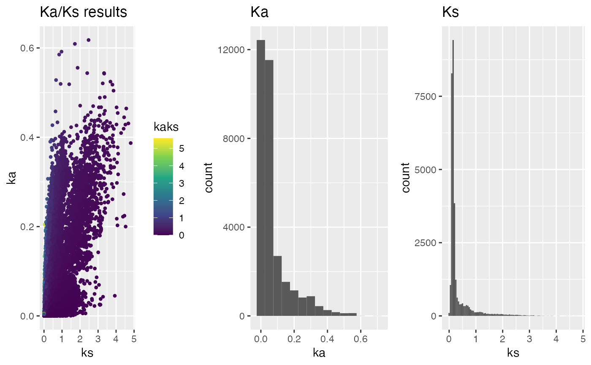
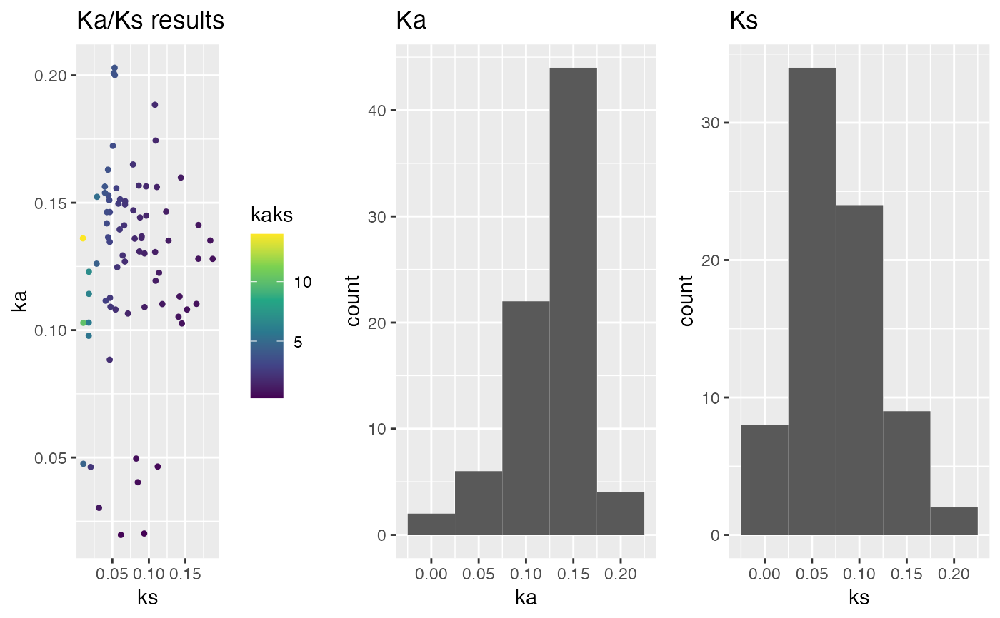

This function plots Ka/Ks results obtained via `rbh2kaks()` function.
plot_kaks(
kaks,
dag = NULL,
gene.position.cds1 = NULL,
gene.position.cds2 = NULL,
tandem.dups.cds1 = NULL,
tandem.dups.cds2 = NULL,
PlotTitle = "Ka/Ks results",
PlotType = "h",
binw = 0.05,
splitByChr = FALSE,
colorBy = "none",
ka.max = 5,
ks.max = 5,
ka.min = 0,
ks.min = 0,
select.chr = NULL,
doPlot = TRUE
)specify Ka/Ks input obtained via `rbh2kaks()` [mandatory]
specify DAGchainer results as obtained via `rbh2dagchainer()` [default: NULL]
specify gene position for cds1 sequences (see cds2genepos) [default: NULL]
specify gene position for cds2 sequences (see cds2genepos) [default: NULL]
specify tandem duplicates for cds1 sequences (see tandemdups) [default: NULL]
specify tandem duplicates for cds2 sequences (see tandemdups) [default: NULL]
specify Plot title [default: Ka/Ks results]
specify Plot type: "h" histogram or "d" dotplot [default: h]
specify binwidth (see geom_histogram) [default: 0.05]
specify if plot should be split by chromosome [default: FALSE]
specify if Ka/Ks gene pairs should be colored by "rbh_class", "dagchainer", "tandemdups" or "none" [default: rbh_class]
specify max Ka to be filtered [default: 5]
specify max Ks to be filtered [default: 5]
specify min Ka to be filtered [default: 0]
specify min Ks to be filtered [default: 0]
filter results for chromosome names [default: NULL]
specify plot [default: TRUE]
## load example sequence data
data("ath_aly_ncbi_kaks", package="CRBHits")
## plot Ka/Ks values - default
g <- plot_kaks(ath_aly_ncbi_kaks)

## Calculate Ka/Ks values based on MSA
data("hiv", package="CRBHits")
hiv_kaks <- dnastring2kaks(hiv)
#> Joining, by = c("Comp1", "Comp2")
#> Joining, by = c("Comp1", "Comp2")
#> Joining, by = c("Comp1", "Comp2")
g <- plot_kaks(hiv_kaks)
